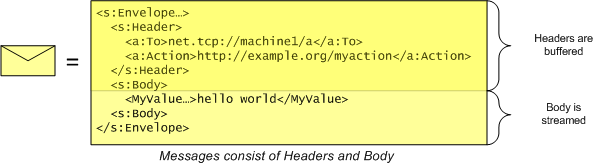

title: Message (Windows Web Services) description: A message is an object that encapsulates data that is transmitted or received. ms.assetid: edc810d9-7d78-4b79-8cbb-e87401f6ae41 keywords:
A message is an object that encapsulates data that is transmitted or received. The structure of a message is defined by SOAP and includes a set of headers and a body. The headers are always buffered in memory, but the body is read and written with a streaming API.

Messages have a set of properties which can be used to specify optional settings that control the behavior of a message, and to provide a way to retrieve additional information about received messages (such as security information). See WS_MESSAGE_PROPERTY_ID for a complete list of message properties.
A message is addressed to a specific Endpoint Address.
A WS_FAULT is a special sort of message content used to represent failures returned from a remote endpoint.
Messages undergo encoding that transforms the XML to a linear wire format before being transmitted.
For more information on messages, see the Channel Layer Overview topic.
The following examples illustrate using messages in WWSAPI.
| Example | Description |
|---|---|
| CustomHeaderExample | Illustrates using custom message headers. |
| MessageEncodingExample | Illustrates encoding and decoding a message. |
| ForwardMessageExample | Illustrates forwarding a message. |
Â
The following API elements are used with messages.
| Callback | Description |
|---|---|
| WS_MESSAGE_DONE_CALLBACK | Notifies the caller that the message has completed its use of either the WS_XML_READER structure that was supplied to WsReadEnvelopeStart function, or of the WS_XML_WRITER structure supplied to the WsWriteEnvelopeStart function. |
Â
| Enumeration | Description |
|---|---|
| WS_ADDRESSING_VERSION | The version of the specification used for the addressing headers. |
| WS_ENVELOPE_VERSION | The version of the specification used for the envelope structure. |
| WS_HEADER_ATTRIBUTES | A set of flags representing the SOAP mustUnderstand and relay attributes of a header. |
| WS_HEADER_TYPE | The type of the header. |
| WS_MESSAGE_INITIALIZATION | Specifies what headers the WsInitializeMessage should add to the message. |
| WS_MESSAGE_PROPERTY_ID | The ID of each message property. |
| WS_MESSAGE_STATE | The state of the message. |
Â
| Function | Description |
|---|---|
| WsAddressMessage | Assigns a destination address to a message. |
| WsCheckMustUnderstandHeaders | Verifies that specified headers were appropriately understood by the receiver. |
| WsCreateMessage | Creates an instance of a WS_MESSAGE object. |
| WsCreateMessageForChannel | Creates a message that is appropriate for use with a specific channel. |
| WsFillBody | Ensures that there are a sufficient number of bytes available in a message for reading. |
| WsFlushBody | Flushes all accumulated message body data that has been written. |
| WsFreeMessage | Releases the memory resource associated with a message. |
| WsGetCustomHeader | Finds the application-defined header of the message and deserializes it. |
| WsGetHeader | Finds a particular standard header in the message and deserializes it. |
| WsGetHeaderAttributes | Populates a ULONG parameter with the WS_HEADER_ATTRIBUTES from the header element on which the reader is positioned. |
| WsGetMessageProperty | Retrieves a specified Message object property. |
| WsInitializeMessage | Initializes the headers for the message in preparation for processing. |
| WsMarkHeaderAsUnderstood | Marks a header as understood by the application. |
| WsReadBody | Deserializes a value from the XML Reader of the message. |
| WsReadEnvelopeEnd | Reads the closing elements of a message. |
| WsReadEnvelopeStart | Reads the headers of the message and prepares to read the body elements. |
| WsRemoveCustomHeader | Removes a custom header from the message. |
| WsRemoveHeader | Removes the standard WS_HEADER_TYPE object from a message. |
| WsResetMessage | Sets the Message state back to WS_MESSAGE_STATE_EMPTY. |
| WsSetHeader | Adds or replaces the specified standard header in the message. |
| WsWriteBody | Writes a value in the body of a message. |
| WsWriteEnvelopeEnd | Writes the closing elements of a message. |
| WsWriteEnvelopeStart | Writes the start of the message including the current set of headers of the message and prepares to write the body elements. |
Â
| Handle | Description |
|---|---|
| WS_MESSAGE | The opaque type used to reference a message object. |
Â
| Structure | Description |
|---|---|
| WS_FAULT | A fault value carried in the body of a message which indicates a processing failure. |
| WS_FAULT_CODE | Represents a fault code. |
| WS_FAULT_REASON | Contains an explanation of the fault. |
| WS_MESSAGE_PROPERTIES | Specifies a set of WS_MESSAGE_PROPERTY structures. |
| WS_MESSAGE_PROPERTY | Specifies a message specific setting. |
Â
Â
Â